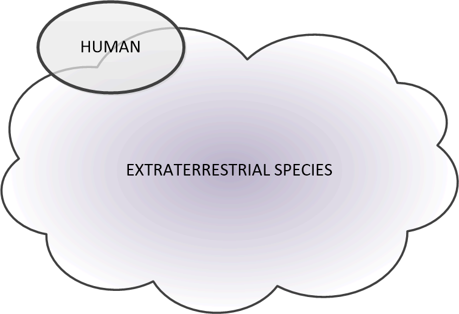
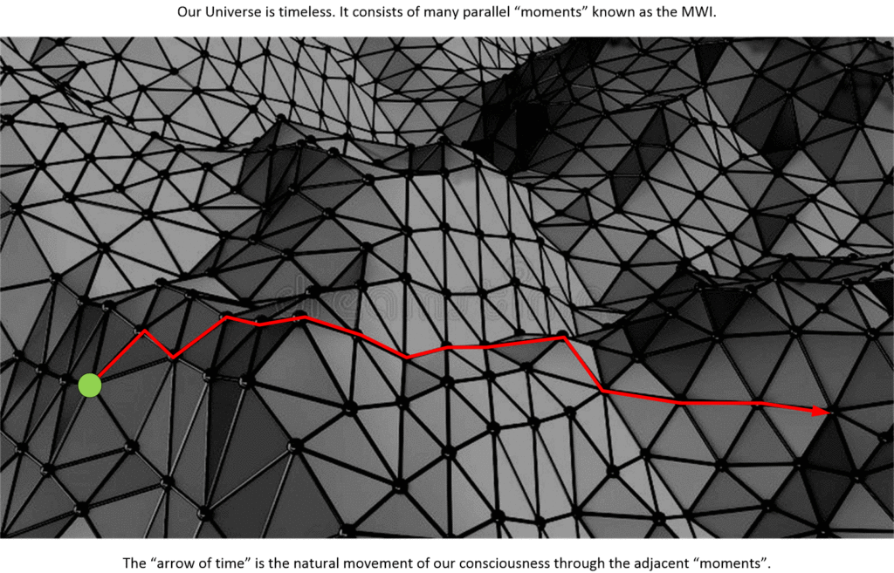
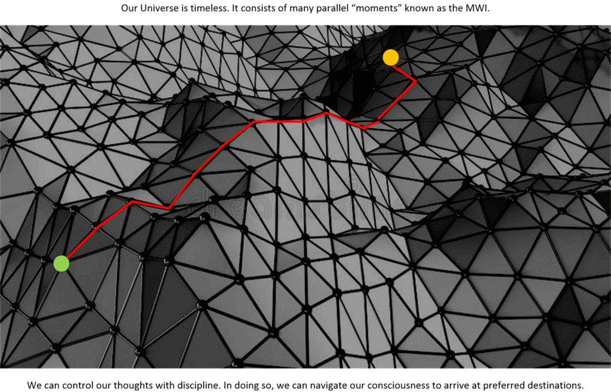
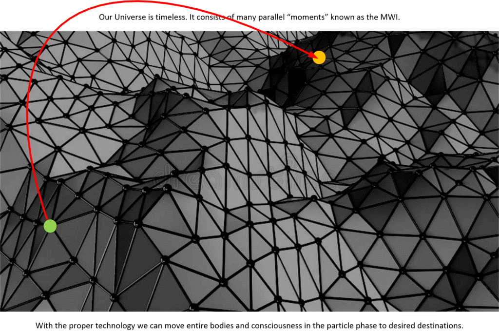
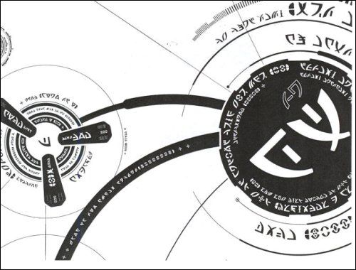
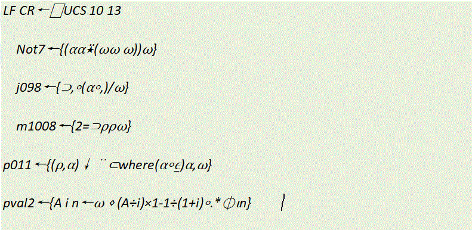

This particular post has been compiled from an array of common questions that I have collected over the years. It originates from others which whom I have discussed my history with. It dates back years, though this is the first time any of it was “published” on the internet.
It is my hope that I will be able to provide some direct answers to simple questions that might have eluded the average reader.
These questions are composed of numerous “actual questions” that seem to come up, even after the questioner had read the any of the writings or archived manuscripts. They also include other more detailed “probing” questions that were asked by a number of more inquisitive individuals that I considered worthy to include.
In all cases the reader must realize that I can only answer these questions from my point of view; the view of the participant, and the view of the observer. I cannot provide an absolute answer, because in many cases I do not know the answers.
Questions are in paragraphs with a blue-colored background. Answers are on a white colored background. My comments are all over the place. But, it’s my methodology, don’t ya know.
Let’s get started…
The Philadelphia Experiment
People who are naturally inquisitive have a tendency to know a lot. They tend to read a lot. They tend to look at other sources of information. They tend to come across unusual thoughts, and speculations. Often these are ideas that are foreign to the vast bulk of the population. As such, they are often introduced to “fringe” and other “out of the mainstream” subjects.
These tend to be easily (and quickly) dismissed by the ignorant. They are dismissed simply because they are not promoted by the mainstream news networks.
As such I argue that the respect that everyone has for mainstream American Media is wholly misplaced. They are a very established and well-organized propaganda network. Further, they haven’t produced non-biased news for at least 50 years, if not longer.
Therefore, using them as a measure of credibility is foolish.
Now sometimes, people will read my posts, and try to find connections to other “fringe” subjects. When you start talking about “extraterrestrials”, the first thing people think of is “UFO’s”, then comes “little green aliens”, and then you have the “Reptilians”. Sigh.
You just don’t know what is real and what is fake.
There are a host of “fringe” subjects that all kind of get lumped in the same general “basket” with disclosures. These are the realms of “the X-files” and other similar fiction.
One of which is “The Philadelphia Experiment”.
Today, this subject has taken on “legs” of it’s own. I, however, well remember when I was first exposed to it. Back in the early 1970’s. I had a paperback book titled “The Philadelphia Experiment”. I read it with great interest.
I found the stories about people getting stuck between bulkheads and decks particularly horrific.
As I recall, apparently someone took the original book, and wrote in the margins in three different colored pens. Later, someone “discovered” the annotated book. This resulted in their comments being published. All in all, their comments painted a fantastical picture of war-time experimentation gone terribly wrong.
- Philadelphia Experiment – Wikipedia
- The Philadelphia Experiment – What’s the Real Story
- THE PHILADELPHIA EXPERIMENT – bibliotecapleyades.net
- What really happened during the Philadelphia Experiment?
Thus this question…
The “Jump Gate” / “Dimensional Portal” that you refer to, the one that you had your first egress from at NAS, NASC Pensacola Florida, is this technology derived from the Philadelphia Experiment?
I do not know.
The impression that I get is that the technology is quite mature and is probably something developed by the <redacted> or another extraterrestrial species. Personally, I do not think that it is wholly a “home grown” human invented technology. It could be, of course. But, I just do not think that it is.
However, the very truth is that I do not know.
What I do know is that;
- The technology was used on an American Naval base.
- It was mature technology.
- There was strict usage protocols involved.
- It did deliver me to a “place” not on this Earth.
- My destination was wholly inhabited by extraterrestrials.
MK ULTRA
Project MKUltra, also called the CIA mind control program, is the code name given to a program of experiments on human subjects that were designed and undertaken by the United States Central Intelligence Agency—and which were, at times, illegal. Experiments on humans were intended to identify and develop drugs and procedures to be used in interrogations in order to weaken the individual and force confessions through mind control. The project was organized through the Office of Scientific Intelligence of the CIA and coordinated with the U.S. Army Biological Warfare Laboratories. -Wikipedia
Do you think that you were involved in MK ULTRA?
No.
That program was an experimental program involving a completely different branch of the American government, and at least “officially” terminated in the 1970’s. I did not experience anything even remotely resembling any of the “training” or “events” that have been publicly disclosed.
According to The Washington Times, the project began as a response to soldiers returning home with stories about the mind control techniques used by their “Soviet, Chinese, and North Korean captors.” Originally, the project’s primary goal was to manipulate prisoners of war in order to gain influence with country leaders. However, MK-Ultra expanded quickly into a vast series of subprojects. The Washington Times reported that the subjects of the study were “perception, behavioral analysis, religious cults, personality conditioning, microwaves, sensory deprivation, and hallucinogenic drugs.”
MK-Ultra began as a volunteer-based program, but the government went on to use test subjects who had no idea that they were being experimented on. Declassified CIA documents revealed that one branch of the project used a San Francisco brothel to test the effects of LSD on adults without their knowledge. The men who came to the brothel were served cocktails laced with acid, and the rooms featured two-way mirrors so that CIA operatives could watch the effects of the drug play out.
Youth Recruitment
Some people claim that they are chrononauts. (Ah, it’s just a fancy-pansy name for time-traveler.) They argue that they were recruited at an early age and groomed for this role…
Many other people who say that they were recruited for “top secret” roles involving dimensional-travel, and time-travel state that they were recruited at a young age, even genetically programmed for it. Were you?
No.
As far as I know, I was just an average kid who did well in school and was in the right place at the right time, with the right skills when this opportunity “fell into my lap”. Granted, from an early age I was groomed for space.
Anyways, the candidates for my role had to possess …
- [1] A technical education. (A bachelor of science at the bare minimum.)
- [2] Be qualified to enter the rigorous Naval Aviation program. This meant a battery of tests, personal interviews, physical, emotional and mental tests, and a series of “hoops” that we all had to jump through.
- [3] Had to meet a series of other ELF qualification tests that most Naval Aviators apparently failed at. (Lucky me, eh?)
- Further, [4] one had to be pre-selected (or perhaps pre-screened) by an extraterrestrial species prior to getting involved in MAJestic.
Secrecy
Questions about what I say relative to the point that I know very little about things…
How can you make any statements regarding MAJestic when you yourself specifically stated that you were “kept in the dark” on many elements of the program?
The statements that I make are educated extrapolations from what I actually know and what I have been exposed to.
I could very well be wrong about many things. So, I must ask the reader this; what is better [1] say and do nothing and let the reader live in ignorance, or [2] provide what little I do actually know and let the reader come to their own conclusions?
I chose the latter.
World-Line Sharing
Do you and Sebastian share the same world-line?
No.
No one shares their reality with another. We share “similar” world-lines and interact with each others “quantum shadows”. We both have the same mission parameters. Yet we operate independently.
Bonus: Here's some real answers to help explain how consciousness moves about the MWI; Imagine that the MWI is a big football stadium. You are standing in the middle of it, and trying to listen to different people talking in the stadium. You start by focusing on the child with the balloon. Then you focus on the fat man with a hot dog, then you go to the third cheerleader from the left. You can focus your mind on the specific sounds at will. The people closest to you will be the easiest to listen in on. Those far from you will be progressively more difficult to hear. That is exactly how consciousness moves about the MWI. The only difference is that it doesn't hop around so much. It goes to nearby and adjacent sounds. Those are those naturally easy to hear. Those, and further ones that are loud (like someone yelling or screaming). The movement towards the loudest, and closest sounds is exactly how consciousness moves about in the MWI. TIME We call that "the passage of time". INTENTION The "Law of Intention" is directed thought where you intentionally listen to certain sounds and avoid other sounds. That is so that your destination reality that you want manifests. DIMENSIONAL EGRESS Now, with the right technology, such as a parabolic hearing aide, you can "zoom" into specific sounds quire easily and exactly. That is how dimensional portals work.
Specific Mission Parameters
What was your “mission” in MAJestic?
This is how the MAJestic leadership understood my role…
My PRIMARY purposed task was to be utilized by an extraterrestrial species so they can monitor the Earth. I was lent to them by MAJestic; “rented out” so to speak. Once I was rented out to them, they implanted an EBP and altered my genetic makeup. I then become their “eyes and ears”.
As such, I was like an “Ambassador of sorts”.
I was never told that this was my role. I learned about it much later. That was all that the MAJestic leadership knew about. I was to be the "eyes and ears" of an extraterrestrial species though the implantation of a special device inside my skull. This device is known as a EBP.
My SECONDARY task was for MAJestic to monitor my interaction with the sponsoring extraterrestrial species. Then report findings back to MAJestic leadership. This was facilitated in “real time” via ELF communication. MAJestic implanted a series of seven other devices that enabled my actions and behaviors to be monitored. These are ELF devices.
- Kit #1 is the “normal” MAJestic kit that all members have.
- Kit #2 interfaces with the EPB, and enables dimensional egress.
That is what my MAJestic documentation, the stuff that no one is supposed to know about, says. That is all fine and dandy, but you know, our extraterrestrial benefactors have other plans and other purposes, often far, far beyond human understandings.
Now, this is what my role actually was…
Being implanted with the EBP severely altered my perceptions. As such I was entangled with a biological artifice, and privy to a reality that was much more expansive than what my human senses could provide.

It took me a while to get used to this enlarged understanding of things, and augmented perceptions, and out of necessity, I developed “coping skills”.
Over time, I was better able to understand what my actual functional role was by the extraterrestrials that implanted the EBP. Saying that it was to “monitor the earth” is a very simplistic understanding. For they have a much larger understanding on how the universe works, and our role in it.
- We humans think that the universe is one big singular place and we all share it together on this planet.
- Our extraterrestrial benefactors believe that consciousness inhabits world-lines. They tend to cluster together, and this action must be monitored or else catastrophic sentience disruption may occur.
Actually and functionally, I was involved in “dimensional anchoring”. This was a task that facilitated the management of our nursery on the earth for the benefit for the <redacted> extraterrestrials.
In this task, I traversed a number of world-lines of strong similarities in order to keep them “stable”. That is, stable relative to the extraterrestrial requirement. I did this task automatically, and through entanglement with an extraterrestrial entity that had world-line-switching ability by nature of it’s soul structure. In order to achieve entanglement with this other species, I needed to utilize a biological artifice; a “drone” as an intermediary.
It's a very strange thing to say, as most other people who disclose such things to the public talk about "Space Marines", "Reptilians", "enlightened beings", and the healing powers of crystals. I can positively say, beyond any doubt, that I haven't a clue as to what they are all talking about. I know nothing about anything they so earnestly banter about. It does not mean that I hold the only keys to the library of knowledge, but rather my experiences are all very limited and defined within a very narrow band. As such I have no experiences that resemble any of the fringe "X-file" like subjects you hear about on the internet.
To fully understand my purpose, and role, you must recognize that humans are very different from extraterrestrials. We are about as similar as an elephant is to a sweet potato.
It is not like you might see on the science fiction movies, or on “Star Trek”, or the “Star Wars” franchise. Actually, if I would be so bold, it is more like a cross between Robert Heinlein’s story “Glory Road” (of which I have a full text reprint here in Metallicman), and Ursula K. Le Guin‘s “Lathe of Heaven”.

Take heed that these other extraterrestrials are [1] much older than us, [2] much more technologically advanced than we are, and [3] substantially better versed in the mechanism of our reality. Their technology does absolutely look like magic to us humans.
Yeah. What the Hell do you think a real disclosure would look like? Do you honestly believe that it would discuss pulsed infra-ray weapons, shape-shifting reptilians, and enlightened spiritual entities that use crystals to channel thoughts?
I’m going to repeat myself.
This is the real-deal. This is what I was involved with and the trade off that MAJestic worked out with our extraterrestrial benefactors back in the the 1980’s.
Not so exciting, eh?
Sorry, life is not a detective television show with good cops chasing bad guys every week. There are large and long period of dormant and often uninteresting activity.
The only novelty comes from the uniqueness of the characters in the show and the situational environment that the episodes take place in.
Don't you think that a real disclosure would reflect... [1] different ways of looking at things, [2] technologies beyond our comprehension, and [3] an understanding that they could have erased the human race 600 million years ago if they wanted to. We couldn't fight them with "Space Marines" if we wanted to.
Roles
I refer to various “roles”. This has apparently caused great consternation.
Why do you refer to the roles of “Pilot”, “Commander” and “Drone” when using the artifice?
This is a good question. This is HOW I thought about them. However, this actually might be confusing to the reader. I suggest that the reader adopt the following scheme if they are confused;
- Drone = Biological Artifice Device.
- Pilot = Extraterrestrial operating the Biological Device.
- Commander = MAJestic agent using the Biological Device.
Entanglement Utility
How did entanglement assist you in your “mission”?
Entanglement with an extraterrestrial (via a biological artifice / drone) was the only way that I was able to be trained to use alien or extraterrestrial technology.
Humans could not train me. I needed to be trained by an extraterrestrial. They needed to “get inside my head” and teach me in that manner.
Entanglement was always like being in two places at once. On one hand I was living a life as a "normal" guy int he United States, on the other hand I was fully aware of being an extraterrestrial "pilot" elsewhere. This was a simultaneous real-time experience.
During entanglement, it appeared that the (so called) “drone pilot” trained me. Additionally, the operation of the biological artifice /drone required active operation of the drone pilot.
I could not conduct any world-line travel without the drone pilot helping me by operating the biological artifice. When performing world-line operations, the drone pilot would perform most of the work when in “automatic mode”.
When in “manual mode”, the drone pilot was still involved, even though it’s participation was not obvious to me.
What needs to be understood is that all humans are fully capable of autonomous world-line travel and navigation ourselves. Our thoughts move us in and out and through the various world-lines. This is conducted specifically though ADJACENT world-lines based on thought navigation. We refer to this as “the passage of time”.

We can use the power of intention; directed thoughts, to navigate our consciousness towards world-lines that we would prefer to live in.

This differs substantially from the kind of world-line travel that both the dimensional-portal and the drone pilot / biological artifice was involved in. These portals or techniques transported a person or a consciousness (or both) to a NON-ADJACENT world-line.

These world-lines could be very odd depending on the deviance variation from your egress (start point) world-line origination.
CARET similarity to EBP / ELF programming
Your programming for the EBP / ELF probes seem to be similar to the programming for the C.A.R.E.T. “hoax”. Is it the same?
I was actually able to read and understand the coding on the CARET photographs. It has been a long time, but it is pretty clear that the photographs show the functional programming of the materials.

They utilize an APL-like coding that fits within control ladders to specify behavior(s). Once you know the basics, you can easily see the formatting, and the assignment of variables, identification glyphs, and location within the ladder chains.


The language is similar something that might look like an APL version of a standard ladder language to IEC 61131 part 7. That tells me that the technology is the same and the species that made my probes is the same species that provided the CARET drones.
IEC 61131 is an IEC standard for programmable controllers. It was known as IEC 1131 before the change in numbering system by IEC. The parts of the IEC 61131 standard are prepared and maintained working group 7, programmable control systems, of subcommittee SC 65B of Technical Committee TC65 of the IEC. Fuzzy Control Language, or FCL, is a language for implementing fuzzy logic, especially fuzzy control. It was standardized by IEC 61131-7. It is a domain-specific programming language: it has no features unrelated to fuzzy logic, so it is impossible to even print "Hello, world!". Therefore, one does not write a program in FCL, but one may write part of it in FCL.

I have visited various cypher websites where some ignorant millennials “prove” that CARET is a hoax.
I wonder; do they have beards, and rainbow colored suspenders as well...
They do this by “proving” the impossibility to decipher the CARET glyphs. What a fucking joke! What are they trying to decipher / decode / translate? Maybe they expect to decode something like this;
Made by Microsoft Incorporated and assembled in Malaysia.
These jokers could not “decode” or decipher an existing coding language in English, let alone another entirely different technology. Truth this!
Try this. Here’s some APL coding. Convert this into English phrases please;

Travel to Mars
Often, people don’t fully comprehend the complexities of the story as I present it.
They use (what I refer to as) “crutches” to help fill-in blanks and things that aren’t really all that clear to them…
Why did you need to go to Mars?
I never physically “went” to Mars. (I think. Perhaps the off-world medical procedure was on Mars. I don’t know for positive.)
Instead, I was entangled with a biological interface / artifice that was physically located on Mars. This “entanglement” was not like what you the reader might think. It was sort of like me sharing two bodies. I was in two places at once. I was here in my body, on earth, doing my day-to-day activities, and I was completely aware of everything that the drone pilot was doing AS IF I WAS RIGHT THERE IN ITS’ SKIN.
Entanglement does not require physical close proximity.
The drone pilot was in a place that really looked a lot like Mars. However, please take special note. I don’t actually know where it really was. This “Mars” was NOT the Mars that we see on the news and out of photographs from NASA. This is a Mars from a different world-line, a different time, and of course, a completely different history.
Oh, and by the way. The drone pilot lived a very boring and sedentary life most of the time. It resided in a very bland room, doing very bland things, with little in the way of social interaction. It was like being entangled with a golem.
Think about it will ya? You've got a extraterrestrial species that, by their very biological nature, can see the MWI. Wouldn't it make sense for them to use this ability in everyday life? Of course, they would use it. For all those idiots who think that we humans (with our big and powerful American military) can go up against a species that developed planetary spaceflight 600,000 years ago, and go in and out of different world-lines at will, are absolutely delusional.
In order to use the technology in the probes, I needed to access the thought-streams of an extraterrestrial that possessed multi-dimensional ability. This entity was the drone pilot. (This was an extraterrestrial with world-line manipulation ability).
For reasons of safety and security, we shared a drone. That was how I was able to be connected and linked to the extraterrestrial. The drone was located on Mars in a “safe” world-line. Therefore, while I never had to physically go to Mars, that was where my drone was. Thus, I stayed on the earth in this realm. The extraterrestrial drone-pilot stayed on it’s world line and planet. The drone was located on the “safe” Martian world-line.
Why be trained by extraterrestrials?
Why not?
Why did the Mantids or Type-I greys (or another unknown extraterrestrial) need to train you through entanglement?
Because many of the core features of the probes required a non-human understanding and ability to utilize them and unlock their abilities.
Obviously, you cannot have a dog train you how to drive a human-manufactured automobile. You cannot have a snail teach you how to use a cell phone, or use a monkey to teach you how to bake a tasty strudel.
If you want to properly use extraterrestrial technology, they will need to teach you the proper care and use of it. Anything else is just silly.
Personal Benefit.
What benefit would the Mantids give you personally for working with them?
The reward for my participation with the Mantids in this effort was rapid evolutionary soul development through participative exercises. It’s not like they have made promises about this or anything. Rather, it is what naturally happens because my thought streams have been altered, and by the nature of souls, my thoughts establish entanglements. Thus they form and shape, and reshape the garbons, swales and soul components.
Upon my death (in the physical), my “root” soul will evolve into another kind of being (different soul archetypes manifest different physical forms). Possibly even become a Mantid myself. Who knows?
My public life.
Sigh.
All of this is all about what you did for MAJestic, but the truth is aside from your “fantasy world”, you were ONLY an engineer. What did you do in “real life”?
I always wanted to be a space man. I took hard science classes, qualified for Naval Aviation, and entered MAJestic.
I was modified, trained and let loose to be a “normal” guy.
Normal Guy Life.
For the first third of my career, I was a “design engineer”. That means that I designed products. This included computers, appliances, and devices of all sorts. I drew pictures on CAD systems, tested them out, and worked with Industrial design houses to make them attractive.
Professionally, my education was in a joint BS Aerospace / Mechanical Engineering. However, once I was accepted for a pilot role, I dropped the Aerospace / Mechanical program and entered in a simple Mechanical Engineering program so I could immediately enter into the Navy. Later on, I took classes in Electrical Engineering. So my technical background was and still is, Aerospace, Mechanical, and Electrical Engineering.
Hey! Here's a big secret. University degrees are just expensive pieces of paper. If you really want to be successful, then start providing a service and getting a whole bunch of customers. Working for someone else is foolish. Be a boss, anything else is below you.
Depending on the company, I took on various roles such as Design Engineer, Product Engineer, Product Manager, Project Manager or Quality Engineer. I was pretty good at it, and in some companies I held the (informal title) role of “gageteer” or “inventor”. There, I would spend significant time making new gizmos and appliances from scratch in the proto-lab.
It is the closest thing that you can come to a “Mad Scientist” in the industry today.
I climbed the management “ladder” and ended up in the top levels of various companies. This is hardly being “only an engineer”. The stakes are higher, the role is more important, and consequences of failure are more sinister. I worked in middle management roles, and then on to senior management, and finally to executive and director levels.
I then advanced into Senior Engineering / Middle Management roles. I managed groups and teams of technical people towards creation of electro-mechanical devices, mechanisms and products for the consumer and OEM market.
After thirty years of this, MAJestic entered my life again. I was “retired”, and everything was put into a dormant state.
When I was retired, I was just starting a VP Engineering position when the President, and the VP Engineering retired / stepped down.
Unfortunately, my retirement eviscerated my career progression.
Retired MAJestic operative.
No one would hire me. Not even as a janitor, or even to clean up dog and cat shit in the local Animal Shelter. I was willing to clean up contagious tainted hospital rooms, and equipment, and they refused offering me the jab… not because I couldn’t do it. But rather because of my retirement and record associated with it.
I was unhirable.
I started at ground zero when I arrived in China, and then worked my way back up the career ladder into Senior Management and Director level positions. I spent a considerable time in Quality, Production, and the Marketing fields. I was hardly “just” an engineer.
Hey! You try building up your life from absolutely nothing. You try with one set of underwear, and $100 to your name in a new nation where you can’t even fucking speak the language. It was fucking difficult.
说汉语很难。我还在学习。但我的狗比我说话好。
Enjoy being a scientist?
Anyways…
Do you enjoy being a scientist / engineer?
I love to design, invent and make things. Of course, over time, I moved on and advanced beyond this role. There aren’t too many Senior Scientist roles in companies and if you want job stability and financial security, you need to take on management roles.
In one of the companies where I worked (in Milford, Massachusetts) I was constantly making prototypes of consumer appliances. I would take existing products and using the tools of Doctor Frankenstein, I would create all kinds of strange creations. Many of the resulting masterpieces included parts and components from this company.
I think that the little boy still resides deep down inside of me. While the government can ban this and that, they can’t quench our love for science and the gadgets and gizmos associated with it. My dear reader let me introduce you to the “American Science & Surplus” store. The store is large and has a very diverse selection of items. Most of it is what they claim it to be. It is surplus. There have everything from test tubes and beakers, to electronic components, to toys for kids and toys for us bigger kids. Every explorer, scientist, artist, inventor and visionary can find supplies here to bring their concepts to life. It is full of nerdy gags here and there, there is also standardized scientific and engineering equipment large and small to meet your needs. Who knows, maybe you want to build a time machine, or a nuclear engine converter for your motorcycle? Well, here is the place where you can go.

This place is fantastic. You can spend $20 and get an array of items nostalgic from your childhood. I find this a great place to buy the supplies you need to introduce your young children to basic science principles. I could also easily spend $2000 here. Have a naked gun turret? Sure, doesn't everyone? They have a naked gun turret cover for you. Items include nice telescopes to anatomy items. More surplus examples include Swiss army knives stamped with the address of a company in PA to tiaras and cardboard crowns. Haven't see a Mexican jumping bean since I was a kid....but here? Yup! Super fly! And even a super fly eater , Venus Fly Trap is available! Also you will find many novelty items like a Chinese MIG helmet, some old typewriters, lava lamps, and cold war gas masks. Have someone in your life who is hard to buy for? Go here. It is amazing. Go here for the online version; https://www.sciplus.com/
As a result, I have made design disclosures and I do possess numerous American (and International) design patents. Last I checked I still had 11 still active! Imagine that! Obviously someone sees the value in paying the fees to keep them alive.
Though they never bothered to give me the dollar that the contract specified that they fork over to me for relinquishing my ownership rights. Ah, but that's a story for another time.
My most substantive patents are those involving the manipulation of insect behavior. If the user is creative enough, the patents clearly pave the way for the “remote control” of specific insect species. Most notably those that are blood-feeders.
I can tell youse guys stories bout how we tested the effectiveness of the device. We would get inside this 2 meter squared room and sit there for an hour in our underwear. Then we would count the number of bites that they took. Yow! I am not at all "pulling your leg".
Hey! Yeah, and when you are driving on the road today look at all the brake-lights on those cars. They are all LED’s, eh? Who do you think paved the way for their use? Yupper, your’s truly. Oh yeah, and when you see a Brita water filter, you can think about me as well. My products are all over Walmart, K-Mart, and (the now defunct) Sears.
It was the industry that I was in.
Proof
Why don’t you offer PROOF and prove yourself to the reader?
I ask the reader this; ten years ago did you go grocery shopping and buy some dairy products like milk or eggs?
Yes. Good.
Now, you prove it to me.
I would like to see photos, receipts, documents, and confirmation from multiple witnesses. Without proof, everything that you say is just nonsense. You could just be saying you bought eggs and milk, when in fact you were actually buying a six pack of Pepsi cola.
I have spelled out everything that I know, as I well understand it. It is up to you, the reader, to accept it or discard it. I can well predict that there will be many who will “prove” that all of this is a “fraud” and a “hoax”. You can join one of those debunking armies if you don’t like what I have to say.
It’s your life. It’s your reality. It’s in your hands. I’m just telling you the way things are.
Why include pretty girls?
Heh heh. Why the Hell not?
Why do you include all the “pretty girls” that you admit were not part of your program?
The girls had a role. I do not know precisely what the role was, but Sebastian and I were connected to them somehow.
Not only did we fill out the same form, enter the same off-world dimensional portal, but we all had similar characteristics. Sebastian and I were both high-achievers who were aerospace bound. We both possessed technical backgrounds, and we both were “service-to-others” sentience with a desire to help the world and make it better.
The girls were all tops in beauty. They were all kind, and (after talking with them) they all seemed to be of the same sentience and ambitions. We all were gathered together for a reason. We all shared the SAP briefing together, and we all filled out the same handout together.
During operations, I do not recall having anything to do with pretty girls. Either through entanglement, or in my physical life. (Aside from being married to one.)
It wasn’t until after I was retired that I began to associate with large numbers of beautiful girls. From my work office being surrounded by K-POP, and C-POP dance teams, to my many female friends, and various work relationships. The ratio of pretty girls to men is about 20 to one in my work building. (Far, far better than what I had during my university days.) LOL.
No. They were not the same girls that I entered the portal with, but they are all too similar (in type) to dismiss straight out of hand.
Why publish on the internet?
Why did you write this as an internet blog? Why not just simply write a book or two and be done with it?
I suggest you write your own book. This manuscript was written by myself, and I chose this format for my own reasons.
Why talk like you do?
Why do you talk about girls, dating, sex, and penises? I mean it is all over your manuscript, from the moment you entered MAJestic until you describe your current life. Why?
Ah, now to be fair, I also talk about glorious beer served ice cold and a fine sandwich or hamburger. I would love to ramble on about delicious tomatoes and how to grow the best sweetest kinds. I would also like to learn how to make home-made refried beans, and to share some chili recipes.
I also like wine.
And do not get me started on the joys and terrors of having dogs and cats. Those little guys are such a big part of my life.
Here’s a big pink penis. What do ya think? I think it’s glorious.
The festival happens every year on the first Sunday of April, and is held in the Japanese city of Kawasaki. After the lighting of the sacred flame at the Kanayama shrine, a giant pink penis altar is carried around the city in a huge procession.
There’s also penis-shaped sweets, illustrations and carved vegetables as part of the event. Visitors can also buy small penis-shaped souvenirs, which they’re encouraged to rub on a large cast-iron sculpture of a vagina and a pair of legs for good luck. Which couldn’t sound more normal. It’s a tradition that dates back as far as Japan’s Edo Period in the 16th century and originally the festival centered around a local penis-venerating shrine, which was popular with prostitutes who would pray to it for protection from STIs.
The penis altar is also said to help provide marriage harmony and – bizarrely – business protection. These days, the festival is used to raise money for HIV research and it’s become a massive tourist attraction with thousands of people coming from all over to marvel at the penisy splendor of the whole thing.
Sex is an inherent biological motivator. Men will do almost anything to attract the opposite sex, and would likely do anything in their power to procure sexual liaisons with a girl. This is a pretty much well-known fact. (That is, unless they are not a homosexual or sexual deviant of some type. )
It is the understanding of this fact that made Hugh Hefner wealthy. It is the understanding of this fact that made pharmacy companies incredibly wealthy selling Viagra.
It is the understanding of this basic fact that creates the situation for high-priced escorts and business KTV’s and clubs.
When guys get together, we make fun of sex, and joke about penises. We talk about all kinds of things, just like girls do. However, if you go into “mixed company”, the subject matter is usually not discussed at all. This is true all over the world. Guys talk among other guys about certain things that they won’t talk to gals about.
"Mixed Company" = Men and women together in a group.
Using the “carrot and stick” approach, MAJestic was able to manipulate my brain to motivate me to do certain things and behave in certain ways. I think that is why they had me, and the gals, fill out such a personal questionnaire when I first joined MAJestic.
Per my questionnaire, I like big-boobed chesty women with an oval face, dark hair, and a big charming smile. I like green to brown eyes. Now this is just me, and this is what was programmed in the equipment at NAS NASC.
"Carrot and stick method" = American idiom. A motivational tactic that uses a reward and punishment system to encourage improved performance or behavior.
Seriously, if you (the reader) had the ability to motivate a crew of men to do certain tasks, would not (guaranteed) sex with a hot super-attractive girl be great? Wouldn’t it be a GREATER motivating method than a pen with some kind of conventional work-related motivational saying?
Or are you so shallow that your would prefer the motivational pen?
(You know, like I once got for earning a couple of million dollars for the company. It said “Success is a way of life.” I got the pen, and the CEO bought a brand new Mercedes Benz.)
Be honest now.
Or course, I wrote all these posts as if I were talking to one of my best friends. I just lay it all out, without fear, and not afraid of offending anyone. So I talk about things that most “polite company” would never broach. Sex is a part of my life. I was born with a penis and am going to die with one as well. As a man, I act and talk manly about things that interest men.
I like cars. I like technology. I like food. I like pretty girls. I like drinking delicious wine, and singing. I like getting dressed up and going out on the town. I like to sing Country and Western music, and playing with my dogs and cats. It’s just me, but I am very happy just being me.
I have this routine that when I arrive home, my dog brings his little stuffed bone to me. I then pick it up and throw it for him to go run and get. Yet, I also add a twist. I pretend that I cannot find him. He’s out beside himself trying to say to me “Here I am! Here I am!” and then I throw it for him to go and fetch. Good times. Good times.
Oh, and boy oh boy, does he get upset when we go and wash his soft stuffed toy bone. He carries on so.
I am not a woman. I do not know what motivates them. I just know what motivates men.
Here’s what motivates me…
Please kindly note that this post has multiple embedded videos. It is important to view them. If they fail to load, all you need to do is to reload your browser.
Motivational girl #1.
Oval face. Long dark hair. Brown or green eyes. Nice rack. And OMG what a smile! Check… check… check…
I what do know is what motivates myself, my friends and my business associates. I know what men like, and what they don’t like. Oh, yes, maybe we all have our various different tastes, most men that I know would be very happy to have the opportunity to meet (and just talk – nothing else) any of these following girls.
And if there is a “connection” who knows… It’s what drives men to accomplish things.
Motivational Girl #2
Oval face. Long dark hair. Brown or green eyes. Nice rack. Soft and nice and sweet. Check… check… check…
Hopefully one of these girls might strike a bone with the readers to help illustrate my point.
Aren’t you just a sicko who are constantly on the hunt for sex?
No, I am just an average man. We all are motivated by sex. Surprise!
(Though many of us are disgusted by the pretend “male feminists” who claim that they would never behave like a man. They do this so that they can procure women and sex by showing a disingenuous face that they believe would appeal to women. Cowards. They are just actors.)
Motivational Girl #3
Oval face. Brown eyes. Chesty. Long dark hair and an OMG smile! This is my personal ideal.
Now, there are real sime-balls out there. No doubt. These guys would take on predatory behavior, target a girl (or a guy) and harm them terribly.
I have seen stories, on the Internet, about “mongrels” who go on sex trips to have sex with as many prostitutes as possible. Usually this is in Mexico, the Philippines and Thailand.
That is not exactly my “cup of tea”.
American idiom that means “Not something one prefers, desires, enjoys, or cares about.”.
Diversity of sexual liaisons could be quite enjoyable when mixed with singing and booze, but I am not as keen on this as I should be. When you get older, some things that you enjoyed as a youth becomes less important. I’m far removed from the realities of these self-centered lifestyles.
There are also some youthful studs who write on the Internet proclaiming that they work at procuring sex all the time and they do it in places such as Vietnam, et al. They claim ridiculous numbers like 300 hook-ups a year. Give me a break! In reality, the things that they are saying do not match up with the number of times they go to the hospital for STD's. If you have that much sex with strangers you WILL have a doctor on call, and his business card in your wallet.
Motivational Girl #4
Here’s another girl. Can you see why I think that she is attractive?
By the way, if you date ten girls and can’t find one that you would want to have a repeat date with, then you are a real sorry shit. If you meet 300 girls and are absolutely unable to find one that would want to spend some long-term relationships with you then you must be an absolutely horribly disfigured person AND have the personality of a trashcan. I know many plain guys that have managed long-term relationships with meeting just one girl. What I know from my own experience, is that when I am with a girl, the truth is that most of the time they want to come back for more. They want friendship, commitment, courtesy and respect. Gawd, if you can’t have solid relationships after a handful of dates then truly you are a sorry sorry person.
You are going to have sex with a different girl each day, who are not prostitutes, and you don’t have a job or a source of income and can’t speak the language. Yeah, there are idiots that believe this nonsense.
My point is along the lines of why would anyone WANT to write such nonsense (I don’t believe it at all) if it wasn’t for the need to associate sexual procurement with personal ego. Bingo!
That is the point in all of this; a man’s ego is tied directly to his ability to procure sex. You get rich, and are a man of “means”, and then you can get all the sex you want. Yeah, if you are famous. Yes, if you have made a successful business, or are a wealthy and powerful politician…yes you can get sex, and yes, you will have an ego to match it.
Motivational Girl #5
Here’s yet another gal. Right along my speed. Different personality, yet the same archetype. Love it!
▶ Media file: @temp_uuid_a5964b4901c949fb910172f242bd7372.mp4
Sex is MORE than just a biological necessity. It is a motivating factor in men’s behaviors, and the control of it is a direct path to the control of that man. That is how many “secret” organizations control their members. It is one of the ways that MAJestic controls us.
Now, I do know that the world is filled with different kinds of people, and that there are different motivations for the fraction, of a fraction, of a fraction of a percent that have serious gender identity issues. For those rare few, I offer this to titillate…
Fighting, battles and Hollywood…
Were you ever involved in actual battle, defense or fighting?
No.
I never participated in any kind of military action. I never shot at anyone either through a computer interface, or physically. Aside from training “shake and bakes” in my Navy days, I was never involved in anything like what you would find in Hollywood.
I never recognized any kind of enemy, whether it was terrestrial or extraterrestrial.
Retirement
I hated my retirement. It sucked.
How sure are you that all MAJestic members are retired as sex offenders?
I am very confident that this is the case for the bulk of the implanted membership. Certainly those in the highest levels are retired in other manners.
For me, my entire MAJestic cell was retired as sex offenders.
However, the reader might not take my word for it. You can just ignore my statements and say that it was “just a coincidence” that my entire three-man MAJestic cell was retired that way. You can say that it was just a coincidence that we were all retired in Arkansas, at the same facility, during the same month exactly thirty years after joining MAJestic.
It’s just a coincidence.
Where are all those extraterrestrials?
Why do you think that no one has ever seen an extraterrestrial?
I don’t know what you are talking about. I have seen them numerous times.
Remote Viewing
Were you ever involved in Remote Viewing?
No. Though for a lark after reading a few books on the subject, I tried it alone by myself. I was pretty much unsuccessful as far as I could tell.
For a while, I believed that Remote Viewing is a “power” or ability that one can obtain through training and practice. I still believe that.
However, I had previously considered the idea that the “rolling of snake eyes” over and over again (a reference to an event that I had in my early days once I was discharged from the Navy) was a manifestation of some sort of enhanced ESP on my part.
There was an "event" at a keg party after I was discharged from the Navy. I attended a party and everyone was playing backgammon. I started rolling "snake eyes". We were all drinking, and after about the sixth time I rolled "snake eyes" everyone wanted to see how many I could roll. It was an enormous and unlikely number, way, way over 75 times. I've tried to replicate this event, but have been unsuccessful. I used to think that it was due to some kind of special ESP or PSI ability that I had "somehow" picked up somewhere.
Today, I do not believe this at all.
The exercise in the “rolling of snake eyes” was simply a subconscious slide that I did on my own before I had obtained any kind of training.
These probes connected me with an entity (the drone pilot) that possessed a soul that was capable of inter-dimensional travel and understanding. Any “carry-over” skills that I have or would obtain from it, would simply be a characteristic of my entanglement with that entity.
It would not be part of any kind of enhanced ESP ability.
That being stated, everyone has an inherent ESP ability. It lies latent simply because we as children are taught to ignore the elements related to ESP.
Now, earlier in my writings I alluded to the point that those of us so implanted had an improved ESP ability. It is not, and I do mean NOT, because of the probes themselves, but rather because the entanglement has forced us to think and use our minds in other manners.
These other manners are “friendly” to improving one’s ESP ability. Thus, those implanted will have a better ESP ability than before they were implanted.
It’s sort of how the longer you drive a car, the better you get at driving.
ESP
What is ESP actually?
There are many kinds of ESP.
Essentially, ESP is nothing less than a portion of entangled quanta associated (shared) with the consciousness.
As such, this portion can manifest as a wave while consciousness maintains particle behaviors.
When it is a wave it can access the non-physical reality that surrounds our physical reality. There, it can access entire histories and thoughts associated with objects and people within a given reality. If the reader were to take the time to study different manifestations of this aspect, they will be able to see how clearly ESP manifests.
- Precognition – The ability to see into the future.
- Retrocognition – The ability to see into the distant past.
- Clairvoyance – The ability to see events without being physically present.
- Mediumship – The ability to communicate with spiritual world and talk to the deceased.
- Clairsentience – The ability to feel the emotions of others.
- Clairaudience – The ability to receive messages and information through “psychic hearing”.
- Telepathy – The ability to read the minds of others and know what they’re thinking.
- Clairalience – The ability to get psychic impressions from the sense of smell.
- Clairgustance – The paranormal ability to taste a substance without putting it in mouth.
I believe that a human can be taught how to improve and actuate their latent ESP ability. Though, some people are “naturals” in this regard.
Precognition refers to the ability to see the future. Though the scientific community generally rejects precognition because of the lack of demonstration, many scientific explanations are available to explain it. Experiments conducted by the Parapsychology Laboratory at Duke University show the human mind has a habit along with the ability to subconsciously predict an outcome of events by judging current circumstances. Such predictions, if they later become true, are then related to precognition.
Retrocognition refers to the ability to see in the distant past. It can be as simple as recognizing a place, or a person, or somehow knowing what happened in a certain situation one had nothing to do with at the time it took place. When someone experiences déjà vu, it could be a simple instance of retrocognition.
Telepathy refers to the ability to read and other persons thoughts. Telepathy allows a person to communicate with one or more people using their mind and no other sensory input. Recently there are some articles that seem to indicate that certain tests has proven this ability in dogs and cats.
Clairvoyance refers to the ability to see objects or events that are happening to someone else. Similar to telepathy, clairvoyance refers to the ability to gain knowledge about a person, event, or thing without sensory input. Though typically thought to be strongest during meditation, many psychics can get information about the past, present, and future in a variety of non-meditative environments.
Clairaudience refers the ability to hear objects or events that are happening to someone else, without any other additional sensory information. Like clairvoyance, clairaudience is thought to be strongest during meditation, however many clairaudients can obtain information in a variety of environments.
Clairsentience refers to the ability to perceive a feeling throughout the whole body, without any stimulation related to the feeling or information. Some people with this ability may also be considered clairempaths as they can physically tune into other peoples, places, or animals’ emotional experiences. This is considered a type of telepathy that allows emotions to be felt.
Mediumship refers to the ability to communicate with the dead by channeling their spirits. Personally, I am very skeptical about this. It certainly tends to be used in more than just a few scams. I cannot find the utility relative to consciousness application. But, what do I know?
A secondary form of ESP, clairalience refers to the psychic ability to smell. While all humans have the ability to smell, this type of ESP refers to aromas that are not detected by everyone else.
Another secondary form of ESP, clairgustance refers to the ability to taste. While all humans have the ability to taste, this type of ESP refers to the ability to taste without putting anything in the mouth. It is thought that those who have this ability can perceive the essence of a particular substance from the spiritual realms through taste.
Jay Treaty
What do you know about the “Jay Treaty”?
Nothing. However, I do know what the reference is towards. There are a series of “time travel” related videos posted on You-Tube that refer to the “Jay treaty” in a mysterious manner. The production value of the videos is ok, but the content is lacking.
Personally, I think the entire series of videos and all the “cloak and dagger” nonsense regarding the Jay Treaty and historical changes are all nonsensical.
If it happened, so what?
You are on this world-line now. If it didn’t happen, so what? It’s a hoax. Some young millennial with some basic video editing software and some time on their hands contrived to make a series of low budget videos.
It is all just nonsense.
At numerous FAQs for this part, let’s go and move on to the next part of this post which covers more questions and further commentary about my role within MAJestic.
If you want to go to the start of this series of posts, then please click HERE.
MAJestic Related Posts – Training
These are posts and articles that revolve around how I was recruited for MAJestic and my training. Also discussed is the nature of secret programs. I really do not know why the organization was kept so secret. It really wasn’t because of any kind of military concern, and the technologies were way too involved for any kind of information transfer. The only conclusion that I can come to is that we were obligated to maintain secrecy at the behalf of our extraterrestrial benefactors.


MAJestic Related Posts – Our Universe
These particular posts are concerned about the universe that we are all part of. Being entangled as I was, and involved in the crazy things that I was, I was given some insight. This insight wasn’t anything super special. Rather it offered me perception along with advantage. Here, I try to impart some of that knowledge through discussion.
Enjoy.


Influencer Questions
Here are posts that have gathered a series of questions from various influencers. They are interesting in many ways and could help all of us unravel the mysteries of the lives that we live.

MAJestic Related Posts – World-Line Travel
These posts are related to “reality slides”. Other more common terms are “world-line travel”, or the MWI. What people fail to grasp is that when a person has the ability to slide into a different reality (pass into a different world-line), they are able to “touch” Heaven to some extent. Here are posts that cover this topic.


John Titor Related Posts
Another person, collectively known by the identity of “John Titor” claimed to utilize world-line (MWI egress) travel to collect artifacts from the past. He is an interesting subject to discuss. Here we have multiple posts in this regard.
They are;